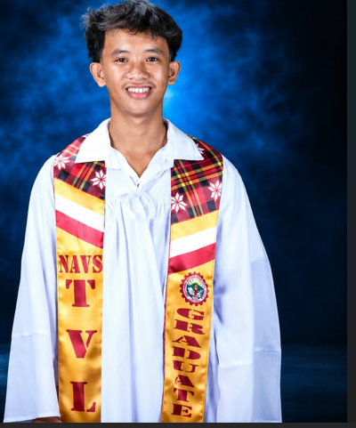

BSIT • COLLEGE OF COMPUTING AND INFORMATION SCIENCES
Hello, I'm John Lester.
I am a first-year Bachelor of Science in Information Technology student who enjoys learning about computers, programming, websites, and new technologies.

About Me
I want to improve my skills and eventually create websites and useful computer applications.
My Journey
I am motivated to learn computers, programming, and new technologies. Every project gives me a chance to practice, make mistakes, and improve.
“Keep learning, keep improving, and never give up.”